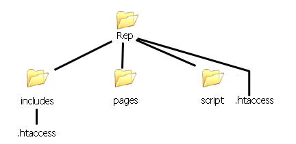
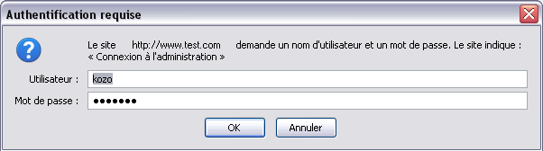

Bonjour tout le monde ! Nous allons ici nous intéresser au fichier .htaccess qui peut servir à beaucoup de choses. Je vais vous résumer son fonctionnement et quelques instructions très utiles.
Alors tout d'abord, qu'est-ce qu'un .htaccess ? Un .htaccess est un fichier qui sert à indiquer des commandes pour le serveur, c'est un fichier de configuration pour Apache. Par exemple, il sert à protéger une page par un mot de passe ou encore à créer ses propres pages d'erreurs (les erreurs 401, 403, 404... etc.).
Et ça fonctionne comment ?
Un .htaccess placé dans un répertoire agit sur ce répertoire et tous les sous-répertoires qu'il contient. Vous pouvez tout de même placer un autre .htaccess dans un des sous-répertoires de ce répertoire. Je vais vous donner un exemple qui sera bien plus explicite que de longues paroles. :p
Exemple
Vous avez un répertoire nommé Rep et qui contient les sous-répertoires includes, pages, scripts. Le répertoire Rep contient un fichier .htaccess et le sous-répertoire includes contient un autre .htaccess. Bon, ce n'est pas très clair je vous l'accorde. Rien de mieux donc, pour comprendre la situation, qu'un beau schéma.

C'est plus clair tout de suite, non ? :D On peut donc voir que le .htaccess situé dans le répertoire Repagit sur le répertoireRepet les sous-répertoiresincludes, pages, script. Le .htaccess situé dans le répertoire includess'additionne à celui situé dans Rep, mais si une instruction est réécrite, alors c'est elle qui s'applique au répertoire includes.
Prenons un exemple
Le .htaccess situé dans Rep a l'instruction deny from all. Ce qui signifie que l'accès est interdit à tout le monde pour les répertoires Rep, includes, pages, script. Mais le .htaccess situé dans includes a l'instruction allow from all, qui signifie que le répertoire includes est accessible à tous. L'instruction deny from all est donc redéfinie par allow from all, et c'est cette instruction qui s'applique à includes.
Voilà pour ce qui est du fonctionnement du .htaccess, passons à la suite...
C'est l'instruction pour indiquer le chemin du fichier qui contient les mots de passe (.htpasswd). Vous devez indiquer le chemin absolu du fichier de mots de passe. Pour connaître le chemin absolu du répertoire dans lequel vous allez placer votre fichier .htpasswd, je vais vous citer la méthode à utiliser, décrite dans le tuto de M@teo21, qui est on ne peut plus claire (un peu modifiée pour qu'elle convienne à mon exemple) :
Citation : M@teo21
1. Créez un fichier appelé "chemin.php". 2. Mettez juste cette ligne de code dedans : <?php echo realpath('chemin.php'); ?> 3. Envoyez ce fichier sur votre serveur avec votre logiciel FTP. Placez-le dans le dossier que vous voulez protéger. 4. Ouvrez votre navigateur et allez voir ce fichier PHP. Il vous donne le chemin absolu, par exemple /exemple/chemin.php. 5. Copiez ce chemin dans votre .htaccess, et remplacez le "chemin.php" par ".htpasswd", ce qui nous donne au final par exemple : /exemple/.htpasswd 6. Supprimez le fichier "chemin.php" de votre serveur, il ne nous sert plus à rien maintenant qu'il nous a donné le chemin absolu.
AuthName
Cette instruction sert à définir le texte qui invitera la personne à entrer ses identifiants. Voici ce que cela peut rendre sous Firefox 3.0.9 :

Vous l'aurez compris, ici, le texte entré dans le .htaccess est:
AuthName "Connexion à l'administration"
AuthType Basic
AuthType Basic indique qu'il faut utiliser AuthUserFile pour vérifier les mots de passe. Ici, ce sera donc .htpasswd qui sera lu pour vérifier les mots de passe.
Require valid-user
On indique que seuls les utilisateurs identifiés sont autorisés. On peut également mettre Require user Nom_de_l_utilisateur, par exemple, si l'on veut restreindre un répertoire à une seule partie des personnes inscrites sur la liste des mots de passe.
Oui, mais je les mets comment, moi, les mots de passe dans le fichier ?
Bonne question. ;) Eh bien là, c'est très simple, il vous suffit de créer un fichier de n'importe quel nom ; dans mon exemple, c'était le fichier .htpasswd, car on appelle communément ce fichier .htpasswd, mais vous pouvez l'appeler comme vous voulez (pour une fois qu'on vous laisse le choix :p ). Donc, pour créer ce fichier, rien de plus simple : il vous suffit d'ouvrir... Bloc-notes (ou Notepad++, tant qu'à faire) !! La syntaxe à utiliser pour indiquer les mots de passe est la suivante :
Pseudo:Mot_de_passe
Le mieux est de crypter les mots de passe à l'aide de la fonction crypt de PHP. Vous pouvez vous servir du formulaire utilisé dans le tuto de M@teo21 (encore une fois :D ), disponible ici.
Certains serveurs n'acceptent pas le cryptage, comme Free par exemple. Vous êtes donc obligés de laisser le mot de passe tel que vous devez le rentrer.
Voilà, nous en avons fini pour ce qui est de protéger un répertoire.
Bon, pour les instructions Auth... pas besoin d'en reparler. Par contre, c'est la balise <Files></Files> qui est nouvelle. C'est elle qui permet d'effectuer les instructions juste pour un fichier. Cette balise n'accepte qu'un seul fichier, vous aurez donc le même nombre de balises que de fichiers : si vous mettez plusieurs fichiers dans la même balise, Apache retournera une erreur.
Et voilà encore une nouvelle technique apprise. ;)
Vous vous en doutez, c'est l'instruction qui sert à dire que si l'erreur numéro XXX survient, on redirige vers la page d'erreur XXX.
Je pense ne pas pouvoir vous en dire plus si ce n'est vous donner les codes d'erreur les plus fréquents et ce à quoi ils correspondent. 400:Bad Request: la syntaxe de la requête est mal formulée. 401:Unhautorized: l'utilisateur n'a pas entré le bon mot de passe pour accéder au contenu. 403:Forbidden: l'accès au contenu est interdit. 404:Not Found: le document n'a pas été trouvé. 500:Internal Server Error: le serveur a rencontré une erreur interne (erreur de script ou erreur passagère). 503:Service Unvailable: le serveur ne peut pas répondre à cause d'une surcharge de trafic (trop de visiteurs).
Ce n'est pas très clair dit comme ça, mais vous allez tout de suite comprendre de quoi il s'agit. Lorsque vous entrez une URL dans votre navigateur en tapant par exemple www.monsite.com, vous êtes automatiquement redirigés vers l'index, par exemple, index.php. Ici, il s'agit de configurer cette redirection :
Cette instruction a donc pour but de dire : Si rien n'est entré, on redirige vers index.php ; s'il n'existe pas, on redirige vers index.html, s'il n'existe pas, on redirige vers erreur_403.php (qui est la page d'interdiction) afin de ne pas afficher tout le contenu du dossier.
Voilà encore une particularité terminée ; on passe à la dernière et après, vous serez des pros du .htaccess. ^^
Ces 3 techniques reposent sur la notion de type MIME (Multipurpose Internet Mail Extensions).
Et c'est quoi, un type MIME ? :euh:
Un type MIME est un standard utilisé pour définir la nature d'un document.
Par exemple, pour un fichier exemple.jpg, le type MIME est :
Content-type: image/jpeg
Ici, le fichier est donc une image, et plus précisément une image de type JPEG. Chaque transfert entre le serveur et le client (votre navigateur) débute par le type MIME du fichier que vous avez "appelé".
Ainsi, lorsque vous chargez une page de type html, le serveur débute le transfert par Content-type: text/html.
Maintenant que vous savez ce qu'est le type MIME, revenons au .htaccess. :)
AddType
La fonction AddType a pour but, la plupart du temps, d'indiquer au navigateur comment interpréter un fichier dont l'extension est inconnue. Par exemple pour un fichier ayant l'extension .dwg, le navigateur ne sait pas a quoi correspond le fichier. On peut donc écrire dans le fichier .htaccess :
AddType application/acad dwg
Le navigateur ouvrira donc le logiciel en association avec l'extension .dwg, en l'occurrence Autocad, si celui ci est installé sur l'ordinateur du client.
Cette commande permet également de changer une action normalement prédéfinie. Par exemple, en entrant le code suivant dans le .htaccess :
AddType image/jpeg .html
Le navigateur interprètera le fichier html comme si c'était une image de type jpeg.
ForceType
Cette fonction agit un peu comme la fonction AddType sauf qu'elle agit sur tout les types de fichiers où est placé le .htaccess.
Ainsi, si vous écrivez dans votre .htaccess :
ForceType image/jpeg
Tous les fichiers présents dans le répertoire du .htaccess seront considérés comme des fichiers jpeg et ce quel que soit leur type (.html, .php, .png...).
DefaultType
DefaultType est tout simplement destiné à définir l'action qui sera effectuée par le navigateur lorsque il rencontrera un fichier inconnu. Le code suivant aura par exemple pour effet d'interpréter n'importe quel fichier inconnu comme un fichier de type html.
DefaultType text/html
Ces 3 fonctions n'ont plus de secret pour vous ;) , vous pouvez passer à la suite.
Le principe du fichier est d'interdire au visiteur toutes les pages et de le rediriger vers une page de maintenance.
Voici donc la structure du .htaccess :
ErrorDocument 403 /maintenance.html
deny from all
allow from xx.xxx.xxx.xxx
<Files maintenance.html>
allow from all
</Files>
Oué m'enfin là, je ne comprends pas grand-chose à ce qu'on a marqué. o_O
Ne vous inquiétez pas, on va expliquer :p :
ErrorDocument 403 /maintenance.html
On définit le fichier d'erreur 403 (l'erreur 403 est l'erreur qui indique que l'accès est interdit) comme étant la page maintenance.html : le site va donc afficher cette dernière lorsque la page est "interdite" (à la place du message Error 403 Forbidden).
deny from all
Là, ce n'est pas compliqué : on interdit tout simplement l'accès à tout le répertoire dans lequel se trouve le .htaccess. :D
allow from xx.xxx.xxx.xxx
Bah, effectivement, si c'est interdit, le webmaster ne peut pas y accéder non plus, il faut donc autoriser l'IP ou les IP "xx.xxx.xxx.xxx".
<Files maintenance.html> allow from all </Files> Et là on autorise à tout le monde le droit de voir le fichier maintenance.html.
Voilà, je crois que c'est bon, il ne vous reste qu'à placer ce fichier à la racine de votre site lorsque vous voulez le mettre en maintenance. Après, vous pouvez le mettre dans un répertoire spécial pour ne fermer qu'une seule partie. ;)
Quoi, encore ?? Tu ne nous avais pas dit que c'était fini ?
Si, mais... Je vous donne une option en bonus. :p Je n'en ai pas parlé plus haut parce que ce n'est pas nécessairement utile, mais vous pouvez utiliser la balise <Limit></Limit> qui sert à limiter les opérations permises. Je m'explique. Vous pouvez mettre la balise <Limit></Limit> autour de l'instruction Require. Cette balise prend pour arguments GET et POST, et s'écrit <Limit GET POST></Limit>.
Cette balise permet de définir le type de méthode du protocole HTTP auquel la restriction est appliquée.
Cette fois-ci, c'est bien terminé. :D
Voilà : j'ai essayé de vous résumer le plus simplement possible le fonctionnement du .htaccess et ses principales fonctions. J'espère que ça vous aura été utile. Si vous avez une question ou une correction à faire sur mon tuto, n'hésitez pas à m'envoyer un MP.
Vous pouvez trouver la documentation Apache 2.2 sur le .htaccess ici.
Pour ce qui est de l'URL Rewriting, le tutoriel que je citais précédemment et qui était très bien fait a malheureusement été supprimé. Je vais donc essayer de prendre le temps de recréer un tutoriel sur ce point mais ce n'est malheureusement pas pour tout de suite. C'est donc pour cette raison qu'il n'est pas abordé ici.
Merci à ptipilou et à toute l'équipe des zCorrecteurs ainsi qu'à celle des validateurs pour leur relecture attentive et leurs conseils.